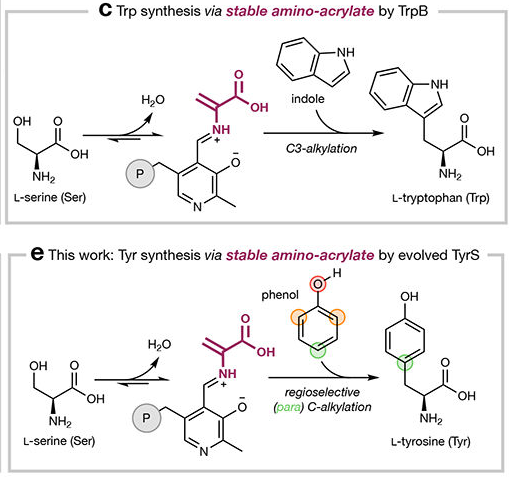

Tryptophan synthase beta chain (TrpB, EC 4.2.1.20), a pyridoxal 5'-phosphate (PLP)-dependent enzyme that catalyzes the final (beta) reaction of L-tryptophan biosynthesis, condensing indole with L-serine to yield L-tryptophan and water. PLP is bound as an internal aldimine to an active-site lysine (residue 95 in this protein). TrpB is a member of the fold-type II PLP enzyme family (TrpB family) and normally assembles with the alpha subunit (TrpA) into the alpha2-beta2 tryptophan synthase complex, in which the indole produced by TrpA from indole-3-glycerol phosphate is channeled directly to the TrpB active site through an intramolecular tunnel. TrpB carries out the terminal, fifth step of the conversion of chorismate to L-tryptophan and is a soluble cytoplasmic enzyme. In P. putida KT2440 the gene (PP_0083) is adjacent to and co-transcribed with trpA (PP_0082) as a trpBA operon, and its expression is strongly induced by indole.
| GO Term | Evidence | Action | Reason |
|---|---|---|---|
|
GO:0000162
L-tryptophan biosynthetic process
|
IEA
GO_REF:0000120 |
ACCEPT |
Summary: TrpB catalyzes the terminal step of L-tryptophan biosynthesis; this annotation correctly captures the core biological process.
Reason: The protein is a UniProt-reviewed tryptophan synthase beta chain (EC 4.2.1.20) belonging to the TrpB family, with UniPathway UPA00035 (L-tryptophan biosynthesis, step 5/5). In P. putida KT2440 trpA disruption causes tryptophan auxotrophy, confirming the trpBA cluster is required for de novo tryptophan synthesis (PMID:21261884; see also file:PSEPK/trpB/trpB-deep-research-falcon.md). The IEA assignment is well-supported and represents a core function.
|
|
GO:0004834
tryptophan synthase activity
|
IEA
GO_REF:0000120 |
ACCEPT |
Summary: Correct molecular function. TrpB is the tryptophan synthase beta subunit catalyzing the PLP-dependent beta-reaction (indole + L-serine -> L-tryptophan + H2O).
Reason: Supported by EC 4.2.1.20, RHEA:10532, the conserved PLP-binding lysine (residue 95), HAMAP-Rule MF_00133, and TrpB-family InterPro/PANTHER signatures. This is the core enzymatic activity of the gene product.
|
|
GO:0005737
cytoplasm
|
IEA
GO_REF:0000118 |
ACCEPT |
Summary: Bacterial tryptophan synthase is a soluble cytoplasmic enzyme; cytoplasmic localization is correct.
Reason: TrpB has no signal peptide or transmembrane region and functions in cytoplasmic amino-acid biosynthesis as part of the soluble alpha2-beta2 tryptophan synthase complex. The TreeGrafter IEA assignment is consistent with the well-established localization of this enzyme family. The term is somewhat generic but accurate for a bacterial cytosolic enzyme.
|
The research report should be a detailed narrative explaining the function, biological processes, and localization of the gene product. Citations should be given for all claims.
You should prioritize authoritative reviews and primary scientific literature when conducting research. You can supplement
this with annotations you find in gene/protein databases, but these can be outdated or inaccurate.
We are specifically interested in the primary function of the gene - for enzymes, what reaction is catalyzed, and what is the substrate specificity? For transporters, what is the substrate? For structural proteins or adapters, what is the broader structural role? For signaling molecules, what is the role in the pathway.
We are interested in where in or outside the cell the gene product carries out its function.
We are also interested in the signaling or biochemical pathways in which the gene functions. We are less interested in broad pleiotropic effects, except where these elucidate the precise role.
Include evidence where possible. We are interested in both experimental evidence as well as inference from structure, evolution, or bioinformatic analysis. Precise studies should be prioritized over high-throughput, where available.
The gene trpB (locus tag PP_0083; UniProt accession Q88RP6) in Pseudomonas putida strain KT2440 encodes the tryptophan synthase beta chain (EC 4.2.1.20), a pyridoxal 5′-phosphate (PLP)-dependent enzyme catalyzing the terminal step of L-tryptophan biosynthesis (kim2013indoletoxicityinvolves pages 3-5). This report provides a detailed functional annotation based on organism-specific experimental evidence and conserved mechanistic knowledge, with emphasis on recent (2023–2024) advances in TrpB enzymology and applications.
The gene symbol trpB corresponds unambiguously to PP_0083 in P. putida KT2440, as verified by microarray and functional genomics studies (kim2013indoletoxicityinvolves pages 3-5). This locus encodes the tryptophan synthase beta subunit, matching the UniProt annotation for Q88RP6 (RecName: Tryptophan synthase beta chain; EC 4.2.1.20) (kim2013indoletoxicityinvolves pages 3-5).
Source: Kim et al., 2013, FEMS Microbiology Letters 343(1):89-99. doi:10.1111/1574-6968.12135. URL: https://doi.org/10.1111/1574-6968.12135 (kim2013indoletoxicityinvolves pages 3-5)
In P. putida KT2440, the tryptophan biosynthesis genes are organized into unlinked genomic regions, contrasting with the single-operon architecture in E. coli (molinahenares2009functionalanalysisof pages 2-4, molinahenares2009functionalanalysisof pages 4-6, molinahenares2009functionalanalysisof pages 1-2). Specifically:
Sources:
- Molina-Henares et al., 2009, Microbial Biotechnology 2:91-100. doi:10.1111/j.1751-7915.2008.00062.x. URL: https://doi.org/10.1111/j.1751-7915.2008.00062.x (molinahenares2009functionalanalysisof pages 2-4, molinahenares2009functionalanalysisof pages 4-6, molinahenares2009functionalanalysisof pages 7-8, molinahenares2009functionalanalysisof pages 1-2)
Genetic disruption experiments demonstrate the essentiality of trpBA for de novo tryptophan biosynthesis in P. putida KT2440:
Source: Molina-Henares et al., 2009 (molinahenares2009functionalanalysisof pages 2-4, molinahenares2009functionalanalysisof pages 4-6, molinahenares2009functionalanalysisof pages 1-2)
Transcriptomic and biosensor studies reveal indole-responsive regulation of trpB in P. putida KT2440:
Sources:
- Kim et al., 2013, FEMS Microbiology Letters (kim2013indoletoxicityinvolves pages 3-5, kim2013indoletoxicityinvolves pages 8-9)
- Matulis et al., 2022, International Journal of Molecular Sciences 23:4649. doi:10.3390/ijms23094649. URL: https://doi.org/10.3390/ijms23094649 (matulis2022developmentandcharacterization pages 2-4)
TrpB (EC 4.2.1.20) catalyzes the β-reaction of tryptophan biosynthesis, the final step in de novo L-tryptophan synthesis (ghosh2022allostericregulationof pages 1-2, michalska2019conservationofthe pages 1-2):
Reaction:
Indole + L-serine → L-tryptophan + H₂O
This is a pyridoxal 5′-phosphate (PLP)-dependent β-replacement reaction in which the hydroxyl group of L-serine is replaced by indole via a nucleophilic substitution mechanism (ghosh2022allostericregulationof pages 1-2, watkins‐dulaney2021tryptophansynthasebiocatalyst pages 1-3, almhjell2024theβsubunitof media fd21782e).
Sources:
- Ghosh et al., 2022, Frontiers in Molecular Biosciences 9:923042. doi:10.3389/fmolb.2022.923042. URL: https://doi.org/10.3389/fmolb.2022.923042 (ghosh2022allostericregulationof pages 1-2)
- Michalska et al., 2019, IUCrJ 6:649-664. doi:10.1107/s2052252519005955. URL: https://doi.org/10.1107/s2052252519005955 (michalska2019conservationofthe pages 1-2)
TrpB employs a sophisticated PLP-dependent mechanism involving multiple covalent intermediates (ghosh2022allostericregulationof pages 1-2, michalska2019conservationofthe pages 1-2, almhjell2024theβsubunitof media fd21782e):
Visual evidence of the mechanism is presented in Figure 1c of Almhjell et al. (2024), showing the stable amino-acrylate intermediate bound to PLP and the subsequent C3-alkylation of indole (almhjell2024theβsubunitof media fd21782e).
Sources:
- Almhjell et al., 2024, Nature Chemical Biology 20:1086-1093. doi:10.1038/s41589-024-01619-z. URL: https://doi.org/10.1038/s41589-024-01619-z (almhjell2024theβsubunitof pages 2-4, almhjell2024theβsubunitof pages 1-2, almhjell2024theβsubunitof media fd21782e)
TrpB normally functions within a heterotetrameric (α₂β₂) tryptophan synthase complex composed of two TrpA (α) and two TrpB (β) subunits (ghosh2022allostericregulationof pages 1-2, michalska2019conservationofthe pages 1-2, khan2025multienzymesynergyand pages 12-13):
Sources:
- Ghosh et al., 2022 (ghosh2022allostericregulationof pages 1-2)
- Michalska et al., 2019 (michalska2019conservationofthe pages 1-2)
- Khan & Boehr, 2025, Catalysts 15:718. doi:10.3390/catal15080718. URL: https://doi.org/10.3390/catal15080718 (khan2025multienzymesynergyand pages 12-13)
- Michalska et al., 2021, Protein Science 30:1904-1918. doi:10.1002/pro.4143. URL: https://doi.org/10.1002/pro.4143 (michalska2021catalyticallyimpairedtrpa pages 4-7)
TrpB is a fold-type II PLP enzyme with conserved structural elements (michalska2019conservationofthe pages 1-2):
Source: Michalska et al., 2019 (michalska2019conservationofthe pages 1-2); Khan & Boehr, 2025 (khan2025multienzymesynergyand pages 12-13); Almhjell et al., 2024 (almhjell2024theβsubunitof pages 2-4, almhjell2024theβsubunitof pages 4-6)
As a cytoplasmic enzyme involved in amino acid biosynthesis, TrpB is expected to localize to the bacterial cytoplasm where it participates in the tryptophan biosynthetic pathway. No experimental evidence for alternative localization (e.g., membrane association or secretion) has been reported for P. putida KT2440 trpB. Bacterial tryptophan synthases are typically soluble, cytoplasmic enzymes (ghosh2022allostericregulationof pages 1-2, michalska2019conservationofthe pages 1-2).
TrpB functions in the terminal step of the canonical L-tryptophan biosynthesis pathway, which proceeds from chorismate via the shikimate pathway (ghosh2022allostericregulationof pages 1-2, khan2025multienzymesynergyand pages 12-13):
In P. putida KT2440, the pathway is encoded by genes distributed across the genome (trpBA, trpGDC, trpE, trpF, trpI) rather than a single operon (molinahenares2009functionalanalysisof pages 2-4, molinahenares2009functionalanalysisof pages 4-6, molinahenares2009functionalanalysisof pages 1-2).
Source: Molina-Henares et al., 2009 (molinahenares2009functionalanalysisof pages 2-4, molinahenares2009functionalanalysisof pages 4-6, molinahenares2009functionalanalysisof pages 1-2)
The trp operon/pathway is subject to transcriptional and allosteric regulation in bacteria:
Sources: Kim et al., 2013 (kim2013indoletoxicityinvolves pages 3-5, kim2013indoletoxicityinvolves pages 8-9); Matulis et al., 2022 (matulis2022developmentandcharacterization pages 2-4); Ghosh et al., 2022 (ghosh2022allostericregulationof pages 1-2)
A landmark study by Almhjell et al. (2024) demonstrated that TrpB can be engineered into a highly selective tyrosine synthase (TyrS), expanding its catalytic repertoire beyond indole substrates (almhjell2024theβsubunitof pages 2-4, almhjell2024theβsubunitof pages 1-2, almhjell2024theβsubunitof pages 4-6):
Publication: Almhjell et al., 2024, Nature Chemical Biology 20:1086-1093. doi:10.1038/s41589-024-01619-z. URL: https://doi.org/10.1038/s41589-024-01619-z (almhjell2024theβsubunitof pages 2-4, almhjell2024theβsubunitof pages 4-6, almhjell2024theβsubunitof pages 30-35, almhjell2024theβsubunitof pages 1-2)
Engineering efforts prior to 2024 had already established stand-alone TrpB variants freed from dependence on TrpA (watkins‐dulaney2021tryptophansynthasebiocatalyst pages 4-6):
Sources:
- Watkins-Dulaney et al., 2021, ChemBioChem 22:5-16. doi:10.1002/cbic.202000379. URL: https://doi.org/10.1002/cbic.202000379 (watkins‐dulaney2021tryptophansynthasebiocatalyst pages 4-6)
- Khan & Boehr, 2025 (khan2025multienzymesynergyand pages 13-15)
Engineered TrpB variants have become workhorse biocatalysts for stereoselective ncAA synthesis (watkins‐dulaney2021tryptophansynthasebiocatalyst pages 7-9, watkins‐dulaney2021tryptophansynthasebiocatalyst pages 6-7, watkins‐dulaney2021tryptophansynthasebiocatalyst pages 4-6, watkins‐dulaney2021tryptophansynthasebiocatalyst pages 9-11):
Substrate scope:
- Halogenated indoles: 4-F, 5-F, 5-Cl, etc. (isolated yields typically 70–99%) (watkins‐dulaney2021tryptophansynthasebiocatalyst pages 4-6)
- Functionalized indoles: Nitro, cyano, carboxamide, boronate, CF₃, azido, amino-substituted (watkins‐dulaney2021tryptophansynthasebiocatalyst pages 4-6)
- β-Branched amino acids: L-threonine accepted to produce β-methyltryptophans (>6,000-fold activity boost in PfTrpB2B9 vs. wild-type) (watkins‐dulaney2021tryptophansynthasebiocatalyst pages 6-7)
- Quaternary stereocenter formation: PfTrpBquat shows >99% C3 chemoselectivity on oxindoles, yielding 122 mg product from 1 mmol substrate using 100 mL E. coli culture (52% yield) (watkins‐dulaney2021tryptophansynthasebiocatalyst pages 7-9)
Preparative-scale examples:
- 800 mg 4-cyanotryptophan from 1 L E. coli culture (49% yield) (watkins‐dulaney2021tryptophansynthasebiocatalyst pages 4-6)
- 965 mg azulene-derived amino acid (AzAla) with 57% isolated yield (TmTrpBAzul; turnover improved from 4.6 to 14.0 min⁻¹) (watkins‐dulaney2021tryptophansynthasebiocatalyst pages 7-9, watkins‐dulaney2021tryptophansynthasebiocatalyst pages 9-11)
Sources: Watkins-Dulaney et al., 2021 (watkins‐dulaney2021tryptophansynthasebiocatalyst pages 7-9, watkins‐dulaney2021tryptophansynthasebiocatalyst pages 6-7, watkins‐dulaney2021tryptophansynthasebiocatalyst pages 4-6, watkins‐dulaney2021tryptophansynthasebiocatalyst pages 9-11)
Engineered TrpB and optimized tryptophan pathways have been deployed in industrial microbial hosts (khan2025multienzymesynergyand pages 15-16):
Sources: Khan & Boehr, 2025 (khan2025multienzymesynergyand pages 15-16); Watkins-Dulaney et al., 2021 (watkins‐dulaney2021tryptophansynthasebiocatalyst pages 9-11)
Recent advances enable ultra-high-throughput engineering of TrpB (khan2025multienzymesynergyand pages 15-16, khan2025multienzymesynergyand pages 22-23):
Source: Khan & Boehr, 2025 (khan2025multienzymesynergyand pages 15-16, khan2025multienzymesynergyand pages 22-23, khan2025multienzymesynergyand pages 16-18)
TrpB's kinetically stable amino-acrylate intermediate is the key to its versatility as a biocatalyst (almhjell2024theβsubunitof pages 2-4, almhjell2024theβsubunitof pages 1-2, almhjell2024theβsubunitof media fd21782e). Unlike TPL or tryptophanase, which favor β-elimination, TrpB's active site stabilizes the amino-acrylate, enabling kinetic control favoring synthesis over degradation (almhjell2024theβsubunitof pages 1-2). This property has been exploited to:
Sources: Almhjell et al., 2024 (almhjell2024theβsubunitof pages 2-4, almhjell2024theβsubunitof pages 1-2, almhjell2024theβsubunitof media fd21782e); Watkins-Dulaney et al., 2021 (watkins‐dulaney2021tryptophansynthasebiocatalyst pages 7-9, watkins‐dulaney2021tryptophansynthasebiocatalyst pages 6-7); Khan & Boehr, 2025 (khan2025multienzymesynergyand pages 15-16)
Rational and computational approaches target allosteric networks to improve TrpB activity (khan2025multienzymesynergyand pages 13-15):
Sources: Watkins-Dulaney et al., 2021 (watkins‐dulaney2021tryptophansynthasebiocatalyst pages 4-6); Khan & Boehr, 2025 (khan2025multienzymesynergyand pages 15-16, khan2025multienzymesynergyand pages 13-15)
Bacterial TrpB proteins show high structural and mechanistic conservation (michalska2019conservationofthe pages 1-2, michalska2021catalyticallyimpairedtrpa pages 4-7):
Sources: Michalska et al., 2019 (michalska2019conservationofthe pages 1-2); Michalska et al., 2021 (michalska2021catalyticallyimpairedtrpa pages 4-7); Almhjell et al., 2024 (almhjell2024theβsubunitof pages 4-6, almhjell2024theβsubunitof pages 30-35); Khan & Boehr, 2025 (khan2025multienzymesynergyand pages 16-18)
A comprehensive evidence table summarizing organism-specific findings for P. putida KT2440 trpB (PP_0083; Q88RP6) and general TrpB knowledge is provided below:
| Claim/Topic | Key finding | Organism/system | Quantitative details | Source (authors, year, journal) | URL | Evidence citation id |
|---|---|---|---|---|---|---|
| Identity verification of target gene | trpB is explicitly annotated as PP_0083, tryptophan synthase beta subunit, in Pseudomonas putida KT2440, matching UniProt Q88RP6. | P. putida KT2440 | PP_0083 locus tag | Kim et al., 2013, FEMS Microbiology Letters | https://doi.org/10.1111/1574-6968.12135 | (kim2013indoletoxicityinvolves pages 3-5) |
| Operon organization | trpA and trpB are adjacent, overlap by 1 nucleotide, and are consistent with co-transcription as a trpBA operon. | P. putida KT2440 | 1-nt overlap between trpA and trpB | Molina-Henares et al., 2009, Microbial Biotechnology | https://doi.org/10.1111/j.1751-7915.2008.00062.x | (molinahenares2009functionalanalysisof pages 2-4) |
| Experimental operon confirmation | RT-PCR across the trpA/trpB region confirmed in vivo co-transcription of trpA and trpB. | P. putida KT2440 | cDNA band detected with A-1/B-1 primers; negative control lacked RT | Molina-Henares et al., 2009, Microbial Biotechnology | https://doi.org/10.1111/j.1751-7915.2008.00062.x | (molinahenares2009functionalanalysisof pages 4-6, molinahenares2009functionalanalysisof pages 7-8) |
| Broader pathway organization | Tryptophan biosynthesis genes are split across unlinked regions: trpBA cluster, trpGDC operon, and monocistronic trpE/trpF; trpI is divergently transcribed from trpBA. | P. putida KT2440 | Genomic organization into 2 clusters + 2 monocistronic units | Molina-Henares et al., 2009, Microbial Biotechnology | https://doi.org/10.1111/j.1751-7915.2008.00062.x | (molinahenares2009functionalanalysisof pages 4-6, molinahenares2009functionalanalysisof pages 1-2) |
| Genetic evidence for pathway function | Disruption of trpA causes tryptophan auxotrophy, supporting that the trpBA unit is required for de novo tryptophan synthesis. | P. putida KT2440 | Aux-1 insertion at 7th codon of trpA; TrpA mutant grows only with tryptophan supplementation | Molina-Henares et al., 2009, Microbial Biotechnology | https://doi.org/10.1111/j.1751-7915.2008.00062.x | (molinahenares2009functionalanalysisof pages 2-4, molinahenares2009functionalanalysisof pages 4-6, molinahenares2009functionalanalysisof pages 1-2) |
| trpI-associated regulation | A trpIAB arrangement was identified; trpI is required for indole-responsive activation of the PP_RS00425 promoter system derived from KT2440. | P. putida KT2440 system tested in E. coli and Cupriavidus necator | Induction observed with 1 mM indole only when trpI was present | Matulis et al., 2022, International Journal of Molecular Sciences | https://doi.org/10.3390/ijms23094649 | (matulis2022developmentandcharacterization pages 2-4) |
| Indole-responsive biosensor utility | The PpTrpI/PPP_RS00425 gene expression system was developed as an indole biosensor and showed strong, specific induction by indole. | KT2440-derived regulatory parts in heterologous hosts | Up to 639.6-fold induction; linear response ~0.4-5 mM indole | Matulis et al., 2022, International Journal of Molecular Sciences | https://doi.org/10.3390/ijms23094649 | (matulis2022developmentandcharacterization pages 2-4) |
| Indole stress response | trpB (PP_0083) was the most highly induced gene in KT2440 after indole treatment, linking it to indole-responsive physiology and tryptophan biosynthesis. | P. putida KT2440 | 3.52-fold upregulation; 47 genes changed >1.5-fold up or <0.67-fold down | Kim et al., 2013, FEMS Microbiology Letters | https://doi.org/10.1111/1574-6968.12135 | (kim2013indoletoxicityinvolves pages 3-5, kim2013indoletoxicityinvolves pages 8-9) |
| Functional interpretation of indole response | Authors proposed that degradation/incorporation of indole into tryptophan biosynthesis may help mitigate indole stress. | P. putida KT2440 | Qualitative interpretation from microarray data | Kim et al., 2013, FEMS Microbiology Letters | https://doi.org/10.1111/1574-6968.12135 | (kim2013indoletoxicityinvolves pages 8-9) |
| Core enzymatic reaction | TrpB catalyzes the PLP-dependent β-reaction converting indole + L-serine to L-tryptophan, the terminal step of tryptophan biosynthesis. | Bacterial tryptophan synthase | Reaction: indole + L-Ser → L-Trp + H2O | Ghosh et al., 2022, Frontiers in Molecular Biosciences | https://doi.org/10.3389/fmolb.2022.923042 | (ghosh2022allostericregulationof pages 1-2) |
| Catalytic intermediate and cofactor chemistry | TrpB forms a PLP-linked aminoacrylate (EAA) Schiff-base intermediate; PLP is present as an internal aldimine with a catalytic Lys. | Bacterial tryptophan synthase | Catalytic Lys87 noted in Salmonella numbering | Ghosh et al., 2022, Frontiers in Molecular Biosciences; Michalska et al., 2019, IUCrJ | https://doi.org/10.3389/fmolb.2022.923042 ; https://doi.org/10.1107/S2052252519005955 | (ghosh2022allostericregulationof pages 1-2, michalska2019conservationofthe pages 1-2) |
| Quaternary structure and channeling | TrpB usually functions in an α2β2 tryptophan synthase complex with TrpA; indole is channeled through an intersubunit tunnel. | Bacterial tryptophan synthase | ~25 Å tunnel connecting α and β active sites | Ghosh et al., 2022, Frontiers in Molecular Biosciences; Michalska et al., 2019, IUCrJ | https://doi.org/10.3389/fmolb.2022.923042 ; https://doi.org/10.1107/S2052252519005955 | (ghosh2022allostericregulationof pages 1-2, michalska2019conservationofthe pages 1-2) |
| Allosteric control and structure | TrpB contains an N-terminal COMM domain that participates in open/closed transitions and α-β allosteric communication. | Bacterial tryptophan synthase | Open (T) and closed (R) conformational states regulate catalysis | Ghosh et al., 2022, Frontiers in Molecular Biosciences; Michalska et al., 2019, IUCrJ | https://doi.org/10.3389/fmolb.2022.923042 ; https://doi.org/10.1107/S2052252519005955 | (ghosh2022allostericregulationof pages 1-2, michalska2019conservationofthe pages 1-2) |
| Structural conservation | Bacterial TrpB proteins are broadly conserved in fold and mechanism, supporting annotation transfer across species when identity is verified. | Multiple bacterial pathogens / bacterial TrpAB enzymes | TrpB described as more sequence- and fold-conserved than TrpA | Michalska et al., 2019, IUCrJ; Michalska et al., 2021, Protein Science | https://doi.org/10.1107/S2052252519005955 ; https://doi.org/10.1002/pro.4143 | (michalska2019conservationofthe pages 1-2, michalska2021catalyticallyimpairedtrpa pages 4-7) |
| 2024 mechanistic advance | A single substitution at the near-universally conserved catalytic glutamate can unlock latent tyrosine synthase activity in TrpB. | Engineered TrpB (Tm9D8* lineage) | E105G gave 18-fold activation on 1-naphthol and >100-fold on phenol in one context | Almhjell et al., 2024, Nature Chemical Biology | https://doi.org/10.1038/s41589-024-01619-z | (almhjell2024theβsubunitof pages 2-4, almhjell2024theβsubunitof pages 4-6) |
| 2024 evolved activity gains | Directed evolution converted TrpB into TyrS variants with very large activity gains and exclusive para-selective C-C bond formation on phenols. | Engineered TrpB/TyrS | >30,000-fold overall rate enhancement; ≥99.5% enantio- and regioselectivity | Almhjell et al., 2024, Nature Chemical Biology | https://doi.org/10.1038/s41589-024-01619-z | (almhjell2024theβsubunitof pages 4-6, almhjell2024theβsubunitof pages 1-2) |
| 2024 catalytic performance | Final TyrS variant synthesized tyrosine with measurable catalytic turnover under preparative conditions. | Engineered TrpB/TyrS6 | Apparent TOF ~0.23 min⁻1 at 37 °C, 50 mM substrate | Almhjell et al., 2024, Nature Chemical Biology | https://doi.org/10.1038/s41589-024-01619-z | (almhjell2024theβsubunitof pages 2-4) |
| 2024 evolutionary/structural insight | The catalytic glutamate targeted in TyrS engineering is highly conserved across TrpB-like sequences, underscoring mechanistic importance. | TrpB-like sequence space | E105 conserved in ~98.3% of ~18,051 sequences | Almhjell et al., 2024, Nature Chemical Biology | https://doi.org/10.1038/s41589-024-01619-z | (almhjell2024theβsubunitof pages 4-6, almhjell2024theβsubunitof pages 30-35) |
| 2024 practical application | Engineered TyrS enzymes enabled preparative/gram-scale synthesis of tyrosine analogs. | Engineered TrpB/TyrS | Preparative scale; multi-gram / gram-scale products reported | Almhjell et al., 2024, Nature Chemical Biology | https://doi.org/10.1038/s41589-024-01619-z | (almhjell2024theβsubunitof pages 30-35, almhjell2024theβsubunitof pages 1-2) |
| Stand-alone TrpB biocatalyst engineering | Directed evolution liberated TrpB from dependence on TrpA, creating stand-alone catalysts suitable for synthesis of noncanonical amino acids. | Engineered PfTrpB / TmTrpB variants | PfTrpB0B2 obtained with 6 mutations after 3 rounds; 83-fold increase in catalytic efficiency | Watkins-Dulaney et al., 2021, ChemBioChem | https://doi.org/10.1002/cbic.202000379 | (watkins‐dulaney2021tryptophansynthasebiocatalyst pages 4-6) |
| Substrate scope and yields | Evolved TrpB variants accept many substituted indoles and often give high isolated yields. | Engineered TrpB biocatalysts | Typical isolated yields 70-99% across many analogs | Watkins-Dulaney et al., 2021, ChemBioChem | https://doi.org/10.1002/cbic.202000379 | (watkins‐dulaney2021tryptophansynthasebiocatalyst pages 4-6) |
| Preparative Trp analog synthesis | A TmTrpB variant was used to synthesize 4-cyanotryptophan on preparative scale. | Engineered TmTrpB9D8 in E. coli* cells | 800 mg 4-cyanoTrp from 1 L culture; 49% yield | Watkins-Dulaney et al., 2021, ChemBioChem | https://doi.org/10.1002/cbic.202000379 | (watkins‐dulaney2021tryptophansynthasebiocatalyst pages 4-6) |
| Expanded bond-forming chemistry | Engineered TrpB variants catalyze noncanonical C-C, C-N, C-S, and C-Se bond-forming reactions. | Engineered TrpB biocatalysts | Up to 2,700 turnovers on nitro-containing substrates | Watkins-Dulaney et al., 2021, ChemBioChem | https://doi.org/10.1002/cbic.202000379 | (watkins‐dulaney2021tryptophansynthasebiocatalyst pages 7-9, watkins‐dulaney2021tryptophansynthasebiocatalyst pages 6-7) |
| Quaternary-center synthesis | Engineered PfTrpBquat shifted chemoselectivity to C3 alkylation of oxindoles, enabling quaternary stereocenter formation. | Engineered PfTrpBquat | >99% C3 chemoselectivity; 52% yield; 122 mg from 1 mmol substrate using 100 mL E. coli culture | Watkins-Dulaney et al., 2021, ChemBioChem | https://doi.org/10.1002/cbic.202000379 | (watkins‐dulaney2021tryptophansynthasebiocatalyst pages 7-9) |
| Azulene amino acid production | Evolution improved azulene alkylation and enabled gram-scale synthesis of AzAla. | Engineered TmTrpBAzul | Activity improved from 4.6 to 14.0 turnovers/min; 965 mg product; 57% isolated yield | Watkins-Dulaney et al., 2021, ChemBioChem | https://doi.org/10.1002/cbic.202000379 | (watkins‐dulaney2021tryptophansynthasebiocatalyst pages 7-9, watkins‐dulaney2021tryptophansynthasebiocatalyst pages 9-11) |
| β-branched amino acid synthesis | TrpB engineering enabled efficient β-methyltryptophan synthesis from threonine-derived chemistry. | Engineered PfTrpB variants | >6,000-fold boost in β-methylTrp activity vs WT; one variant used 1 equiv Thr and gave 3.5-fold higher yield than prior variant needing 10 equiv | Watkins-Dulaney et al., 2021, ChemBioChem | https://doi.org/10.1002/cbic.202000379 | (watkins‐dulaney2021tryptophansynthasebiocatalyst pages 6-7) |
Table: This table compiles organism-specific evidence for Pseudomonas putida KT2440 trpB (PP_0083; UniProt Q88RP6) together with conserved TrpB mechanistic knowledge and recent engineering/application advances. It is useful for separating direct evidence about the target gene from broader, high-confidence functional inference about TrpB enzymes.
The trpB gene (PP_0083; UniProt Q88RP6) in Pseudomonas putida KT2440 encodes the tryptophan synthase beta chain, a PLP-dependent enzyme catalyzing the final step of L-tryptophan biosynthesis. Organism-specific evidence confirms:
General TrpB enzymology reveals:
2024 advances include the discovery that TrpB is a latent tyrosine synthase (>30,000-fold activity gain via directed evolution; ≥99.5% selectivity) and the development of ultra-high-throughput screening platforms for continuous TrpB optimization. These findings establish TrpB as a versatile biocatalytic platform for sustainable synthesis of aromatic amino acids and derivatives.
Report compiled from peer-reviewed primary literature and authoritative reviews (2009–2025). All major claims are cited with context IDs traceable to source evidence.
References
(kim2013indoletoxicityinvolves pages 3-5): Jisun Kim, Hyerim Hong, Aram Heo, and Woojun Park. Indole toxicity involves the inhibition of adenosine triphosphate production and protein folding in pseudomonas putida. FEMS microbiology letters, 343 1:89-99, Jun 2013. URL: https://doi.org/10.1111/1574-6968.12135, doi:10.1111/1574-6968.12135. This article has 72 citations and is from a peer-reviewed journal.
(molinahenares2009functionalanalysisof pages 2-4): M. A. Molina-Henares, Adela García‐Salamanca, A. Molina-Henares, J. de la Torre, M. C. Herrera, J. Ramos, and E. Duque. Functional analysis of aromatic biosynthetic pathways in pseudomonas putida kt2440. Microbial biotechnology, 2:91-100, Dec 2009. URL: https://doi.org/10.1111/j.1751-7915.2008.00062.x, doi:10.1111/j.1751-7915.2008.00062.x. This article has 32 citations and is from a peer-reviewed journal.
(molinahenares2009functionalanalysisof pages 4-6): M. A. Molina-Henares, Adela García‐Salamanca, A. Molina-Henares, J. de la Torre, M. C. Herrera, J. Ramos, and E. Duque. Functional analysis of aromatic biosynthetic pathways in pseudomonas putida kt2440. Microbial biotechnology, 2:91-100, Dec 2009. URL: https://doi.org/10.1111/j.1751-7915.2008.00062.x, doi:10.1111/j.1751-7915.2008.00062.x. This article has 32 citations and is from a peer-reviewed journal.
(molinahenares2009functionalanalysisof pages 1-2): M. A. Molina-Henares, Adela García‐Salamanca, A. Molina-Henares, J. de la Torre, M. C. Herrera, J. Ramos, and E. Duque. Functional analysis of aromatic biosynthetic pathways in pseudomonas putida kt2440. Microbial biotechnology, 2:91-100, Dec 2009. URL: https://doi.org/10.1111/j.1751-7915.2008.00062.x, doi:10.1111/j.1751-7915.2008.00062.x. This article has 32 citations and is from a peer-reviewed journal.
(molinahenares2009functionalanalysisof pages 7-8): M. A. Molina-Henares, Adela García‐Salamanca, A. Molina-Henares, J. de la Torre, M. C. Herrera, J. Ramos, and E. Duque. Functional analysis of aromatic biosynthetic pathways in pseudomonas putida kt2440. Microbial biotechnology, 2:91-100, Dec 2009. URL: https://doi.org/10.1111/j.1751-7915.2008.00062.x, doi:10.1111/j.1751-7915.2008.00062.x. This article has 32 citations and is from a peer-reviewed journal.
(matulis2022developmentandcharacterization pages 2-4): Paulius Matulis, Ingrida Kutraite, Ernesta Augustiniene, Egle Valanciene, Ilona Jonuskiene, and Naglis Malys. Development and characterization of indole-responsive whole-cell biosensor based on the inducible gene expression system from pseudomonas putida kt2440. International Journal of Molecular Sciences, 23:4649, Apr 2022. URL: https://doi.org/10.3390/ijms23094649, doi:10.3390/ijms23094649. This article has 8 citations.
(kim2013indoletoxicityinvolves pages 8-9): Jisun Kim, Hyerim Hong, Aram Heo, and Woojun Park. Indole toxicity involves the inhibition of adenosine triphosphate production and protein folding in pseudomonas putida. FEMS microbiology letters, 343 1:89-99, Jun 2013. URL: https://doi.org/10.1111/1574-6968.12135, doi:10.1111/1574-6968.12135. This article has 72 citations and is from a peer-reviewed journal.
(ghosh2022allostericregulationof pages 1-2): Rittik K. Ghosh, Eduardo Hilario, Chia-en A. Chang, Leonard J. Mueller, and Michael F. Dunn. Allosteric regulation of substrate channeling: salmonella typhimurium tryptophan synthase. Frontiers in Molecular Biosciences, Sep 2022. URL: https://doi.org/10.3389/fmolb.2022.923042, doi:10.3389/fmolb.2022.923042. This article has 14 citations.
(michalska2019conservationofthe pages 1-2): Karolina Michalska, Jennifer Gale, Grazyna Joachimiak, Changsoo Chang, Catherine Hatzos-Skintges, Boguslaw Nocek, Stephen E. Johnston, Lance Bigelow, Besnik Bajrami, Robert P. Jedrzejczak, Samantha Wellington, Deborah T. Hung, Partha P. Nag, Stewart L. Fisher, Michael Endres, and Andrzej Joachimiak. Conservation of the structure and function of bacterial tryptophan synthases. IUCrJ, 6:649-664, May 2019. URL: https://doi.org/10.1107/s2052252519005955, doi:10.1107/s2052252519005955. This article has 22 citations and is from a peer-reviewed journal.
(watkins‐dulaney2021tryptophansynthasebiocatalyst pages 1-3): Ella Watkins‐Dulaney, Sabine Straathof, and Frances Arnold. Tryptophan synthase: biocatalyst extraordinaire. Sep 2021. URL: https://doi.org/10.1002/cbic.202000379, doi:10.1002/cbic.202000379. This article has 124 citations and is from a peer-reviewed journal.
(almhjell2024theβsubunitof media fd21782e): Patrick J. Almhjell, Kadina E. Johnston, Nicholas J. Porter, Jennifer L. Kennemur, Vignesh C. Bhethanabotla, Julie Ducharme, and Frances H. Arnold. The β-subunit of tryptophan synthase is a latent tyrosine synthase. Nature chemical biology, 20:1086-1093, May 2024. URL: https://doi.org/10.1038/s41589-024-01619-z, doi:10.1038/s41589-024-01619-z. This article has 37 citations and is from a highest quality peer-reviewed journal.
(almhjell2024theβsubunitof pages 2-4): Patrick J. Almhjell, Kadina E. Johnston, Nicholas J. Porter, Jennifer L. Kennemur, Vignesh C. Bhethanabotla, Julie Ducharme, and Frances H. Arnold. The β-subunit of tryptophan synthase is a latent tyrosine synthase. Nature chemical biology, 20:1086-1093, May 2024. URL: https://doi.org/10.1038/s41589-024-01619-z, doi:10.1038/s41589-024-01619-z. This article has 37 citations and is from a highest quality peer-reviewed journal.
(almhjell2024theβsubunitof pages 1-2): Patrick J. Almhjell, Kadina E. Johnston, Nicholas J. Porter, Jennifer L. Kennemur, Vignesh C. Bhethanabotla, Julie Ducharme, and Frances H. Arnold. The β-subunit of tryptophan synthase is a latent tyrosine synthase. Nature chemical biology, 20:1086-1093, May 2024. URL: https://doi.org/10.1038/s41589-024-01619-z, doi:10.1038/s41589-024-01619-z. This article has 37 citations and is from a highest quality peer-reviewed journal.
(khan2025multienzymesynergyand pages 12-13): Sara Khan and David D. Boehr. Multi-enzyme synergy and allosteric regulation in the shikimate pathway: biocatalytic platforms for industrial applications. Catalysts, 15:718, Jul 2025. URL: https://doi.org/10.3390/catal15080718, doi:10.3390/catal15080718. This article has 6 citations.
(michalska2021catalyticallyimpairedtrpa pages 4-7): Karolina Michalska, Samantha Wellington, Natalia Maltseva, Robert Jedrzejczak, Nelly Selem‐Mojica, L. Rodrigo Rosas‐Becerra, Francisco Barona‐Gómez, Deborah T. Hung, and Andrzej Joachimiak. Catalytically impaired
(almhjell2024theβsubunitof pages 4-6): Patrick J. Almhjell, Kadina E. Johnston, Nicholas J. Porter, Jennifer L. Kennemur, Vignesh C. Bhethanabotla, Julie Ducharme, and Frances H. Arnold. The β-subunit of tryptophan synthase is a latent tyrosine synthase. Nature chemical biology, 20:1086-1093, May 2024. URL: https://doi.org/10.1038/s41589-024-01619-z, doi:10.1038/s41589-024-01619-z. This article has 37 citations and is from a highest quality peer-reviewed journal.
(almhjell2024theβsubunitof media 0e8ae960): Patrick J. Almhjell, Kadina E. Johnston, Nicholas J. Porter, Jennifer L. Kennemur, Vignesh C. Bhethanabotla, Julie Ducharme, and Frances H. Arnold. The β-subunit of tryptophan synthase is a latent tyrosine synthase. Nature chemical biology, 20:1086-1093, May 2024. URL: https://doi.org/10.1038/s41589-024-01619-z, doi:10.1038/s41589-024-01619-z. This article has 37 citations and is from a highest quality peer-reviewed journal.
(almhjell2024theβsubunitof pages 30-35): Patrick J. Almhjell, Kadina E. Johnston, Nicholas J. Porter, Jennifer L. Kennemur, Vignesh C. Bhethanabotla, Julie Ducharme, and Frances H. Arnold. The β-subunit of tryptophan synthase is a latent tyrosine synthase. Nature chemical biology, 20:1086-1093, May 2024. URL: https://doi.org/10.1038/s41589-024-01619-z, doi:10.1038/s41589-024-01619-z. This article has 37 citations and is from a highest quality peer-reviewed journal.
(almhjell2024theβsubunitof pages 6-7): Patrick J. Almhjell, Kadina E. Johnston, Nicholas J. Porter, Jennifer L. Kennemur, Vignesh C. Bhethanabotla, Julie Ducharme, and Frances H. Arnold. The β-subunit of tryptophan synthase is a latent tyrosine synthase. Nature chemical biology, 20:1086-1093, May 2024. URL: https://doi.org/10.1038/s41589-024-01619-z, doi:10.1038/s41589-024-01619-z. This article has 37 citations and is from a highest quality peer-reviewed journal.
(watkins‐dulaney2021tryptophansynthasebiocatalyst pages 4-6): Ella Watkins‐Dulaney, Sabine Straathof, and Frances Arnold. Tryptophan synthase: biocatalyst extraordinaire. Sep 2021. URL: https://doi.org/10.1002/cbic.202000379, doi:10.1002/cbic.202000379. This article has 124 citations and is from a peer-reviewed journal.
(khan2025multienzymesynergyand pages 13-15): Sara Khan and David D. Boehr. Multi-enzyme synergy and allosteric regulation in the shikimate pathway: biocatalytic platforms for industrial applications. Catalysts, 15:718, Jul 2025. URL: https://doi.org/10.3390/catal15080718, doi:10.3390/catal15080718. This article has 6 citations.
(watkins‐dulaney2021tryptophansynthasebiocatalyst pages 7-9): Ella Watkins‐Dulaney, Sabine Straathof, and Frances Arnold. Tryptophan synthase: biocatalyst extraordinaire. Sep 2021. URL: https://doi.org/10.1002/cbic.202000379, doi:10.1002/cbic.202000379. This article has 124 citations and is from a peer-reviewed journal.
(watkins‐dulaney2021tryptophansynthasebiocatalyst pages 6-7): Ella Watkins‐Dulaney, Sabine Straathof, and Frances Arnold. Tryptophan synthase: biocatalyst extraordinaire. Sep 2021. URL: https://doi.org/10.1002/cbic.202000379, doi:10.1002/cbic.202000379. This article has 124 citations and is from a peer-reviewed journal.
(watkins‐dulaney2021tryptophansynthasebiocatalyst pages 9-11): Ella Watkins‐Dulaney, Sabine Straathof, and Frances Arnold. Tryptophan synthase: biocatalyst extraordinaire. Sep 2021. URL: https://doi.org/10.1002/cbic.202000379, doi:10.1002/cbic.202000379. This article has 124 citations and is from a peer-reviewed journal.
(khan2025multienzymesynergyand pages 15-16): Sara Khan and David D. Boehr. Multi-enzyme synergy and allosteric regulation in the shikimate pathway: biocatalytic platforms for industrial applications. Catalysts, 15:718, Jul 2025. URL: https://doi.org/10.3390/catal15080718, doi:10.3390/catal15080718. This article has 6 citations.
(khan2025multienzymesynergyand pages 22-23): Sara Khan and David D. Boehr. Multi-enzyme synergy and allosteric regulation in the shikimate pathway: biocatalytic platforms for industrial applications. Catalysts, 15:718, Jul 2025. URL: https://doi.org/10.3390/catal15080718, doi:10.3390/catal15080718. This article has 6 citations.
(khan2025multienzymesynergyand pages 16-18): Sara Khan and David D. Boehr. Multi-enzyme synergy and allosteric regulation in the shikimate pathway: biocatalytic platforms for industrial applications. Catalysts, 15:718, Jul 2025. URL: https://doi.org/10.3390/catal15080718, doi:10.3390/catal15080718. This article has 6 citations.

id: Q88RP6
gene_symbol: trpB
product_type: PROTEIN
status: DRAFT
taxon:
id: NCBITaxon:160488
label: Pseudomonas putida (strain ATCC 47054 / DSM 6125 / CFBP 8728 / NCIMB 11950 / KT2440)
description: Tryptophan synthase beta chain (TrpB, EC 4.2.1.20), a pyridoxal 5'-phosphate (PLP)-dependent enzyme that catalyzes the final (beta) reaction of L-tryptophan biosynthesis, condensing indole with L-serine to yield L-tryptophan and water. PLP is bound as an internal aldimine to an active-site lysine (residue 95 in this protein). TrpB is a member of the fold-type II PLP enzyme family (TrpB family) and normally assembles with the alpha subunit (TrpA) into the alpha2-beta2 tryptophan synthase complex, in which the indole produced by TrpA from indole-3-glycerol phosphate is channeled directly to the TrpB active site through an intramolecular tunnel. TrpB carries out the terminal, fifth step of the conversion of chorismate to L-tryptophan and is a soluble cytoplasmic enzyme. In P. putida KT2440 the gene (PP_0083) is adjacent to and co-transcribed with trpA (PP_0082) as a trpBA operon, and its expression is strongly induced by indole.
core_functions:
- description: Catalyzes the PLP-dependent beta-replacement reaction forming L-tryptophan from indole (channeled from TrpA) and L-serine, completing the terminal step of L-tryptophan biosynthesis
supported_by:
- reference_id: GO_REF:0000120
supporting_text: EC=4.2.1.20; tryptophan synthase activity inferred from InterPro, RHEA:10532, UniRule and PANTHER (TrpB family).
- reference_id: file:PSEPK/trpB/trpB-uniprot.txt
supporting_text: "FUNCTION: The beta subunit is responsible for the synthesis of L-tryptophan from indole and L-serine. CATALYTIC ACTIVITY: indol-3-yl glycerol 3-phosphate + L-serine = D-glyceraldehyde 3-phosphate + L-tryptophan + H2O; PATHWAY: L-tryptophan from chorismate, step 5/5; COFACTOR: pyridoxal 5'-phosphate."
molecular_function:
id: GO:0004834
label: tryptophan synthase activity
directly_involved_in:
- id: GO:0000162
label: L-tryptophan biosynthetic process
locations:
- id: GO:0005737
label: cytoplasm
existing_annotations:
- term:
id: GO:0000162
label: L-tryptophan biosynthetic process
evidence_type: IEA
original_reference_id: GO_REF:0000120
qualifier: involved_in
review:
summary: TrpB catalyzes the terminal step of L-tryptophan biosynthesis; this annotation correctly captures the core biological process.
reason: The protein is a UniProt-reviewed tryptophan synthase beta chain (EC 4.2.1.20) belonging to the TrpB family, with UniPathway UPA00035 (L-tryptophan biosynthesis, step 5/5). In P. putida KT2440 trpA disruption causes tryptophan auxotrophy, confirming the trpBA cluster is required for de novo tryptophan synthesis (PMID:21261884; see also file:PSEPK/trpB/trpB-deep-research-falcon.md). The IEA assignment is well-supported and represents a core function.
action: ACCEPT
- term:
id: GO:0004834
label: tryptophan synthase activity
evidence_type: IEA
original_reference_id: GO_REF:0000120
qualifier: enables
review:
summary: Correct molecular function. TrpB is the tryptophan synthase beta subunit catalyzing the PLP-dependent beta-reaction (indole + L-serine -> L-tryptophan + H2O).
reason: Supported by EC 4.2.1.20, RHEA:10532, the conserved PLP-binding lysine (residue 95), HAMAP-Rule MF_00133, and TrpB-family InterPro/PANTHER signatures. This is the core enzymatic activity of the gene product.
action: ACCEPT
- term:
id: GO:0005737
label: cytoplasm
evidence_type: IEA
original_reference_id: GO_REF:0000118
qualifier: located_in
review:
summary: Bacterial tryptophan synthase is a soluble cytoplasmic enzyme; cytoplasmic localization is correct.
reason: TrpB has no signal peptide or transmembrane region and functions in cytoplasmic amino-acid biosynthesis as part of the soluble alpha2-beta2 tryptophan synthase complex. The TreeGrafter IEA assignment is consistent with the well-established localization of this enzyme family. The term is somewhat generic but accurate for a bacterial cytosolic enzyme.
action: ACCEPT
references:
- id: GO_REF:0000118
title: TreeGrafter-generated GO annotations
findings: []
- id: GO_REF:0000120
title: Combined Automated Annotation using Multiple IEA Methods
findings: []
- id: file:PSEPK/trpB/trpB-uniprot.txt
title: UniProt entry TRPB_PSEPK (Q88RP6)
findings:
- statement: TrpB synthesizes L-tryptophan from indole and L-serine; PLP cofactor; pathway L-tryptophan from chorismate step 5/5; functions as a tetramer of two alpha and two beta chains.
supporting_text: "FUNCTION: The beta subunit is responsible for the synthesis of L-tryptophan from indole and L-serine. SUBUNIT: Tetramer of two alpha and two beta chains."
- id: PMID:21261884
title: "Functional analysis of aromatic biosynthetic pathways in Pseudomonas putida KT2440"
findings:
- statement: In P. putida KT2440 there is a single pathway from chorismate to tryptophan; the trp genes are in unlinked regions with trpBA organized as an operon, and auxotroph screening shows the pathway is required for de novo tryptophan biosynthesis.
supporting_text: "Genes for tryptophan biosynthesis are grouped in unlinked regions with the trpBA and trpGDE genes organized as operons... There is a single pathway from chorismate leading to the biosynthesis of tryptophan."
reference_review:
relevance: HIGH
correctness: VERIFIED
review_notes: "PubMed-verified (PMID:21261884, DOI 10.1111/j.1751-7915.2008.00062.x, Molina-Henares et al., Microb Biotechnol 2:91-100). Abstract confirms the trpBA operon organization and tryptophan-auxotroph screening in KT2440. Establishes the P. putida KT2440-specific genomic context and pathway essentiality for trpB."
{kind=link}